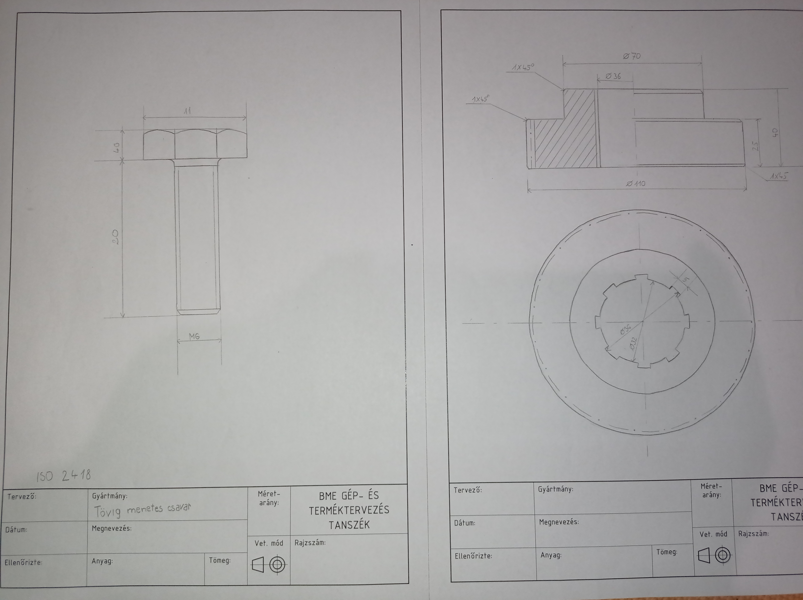

SZERKTAN
Nagy rajzos nem vagyok, művészeti alkotásaim nincsenek. Viszont a Szerkezet- és üzemtani ismeretek tárgy alatt bevezettek minket a műszaki ábrázolás alapjaiba. El kellett készítenünk műszaki rajzok másolatát, egy oldalon keresztül gyakorolni a szabványírást, különböző méretekben, megrajzolni egy összeállítási rajzot, modell alapján, és alkatrészrajzokat. Meg kell tanlnunk a műszaki ábrázolás összes szabályát, például, hogy hogy jelöljük a csavarmenetet, a fogaskereket vagy a felületérdességet. A térlátusunkat is fejlesztjük, mindenféle testeket kellett rajzolnunk, különböző nézetekben, összeállítási rajz alapján kell kirészleteznünk az alkatrészrajzokat. SZABVÁNYÍRÁS
SZABVÁNYÍRÁS

ALKATRÉSZRAJZOK
CSERKÉSZET
A cserkészmozgalomban aktívan tevékenykedem, több számomra mint egy hobbi, inkább egy életforma, így ebben is megszereztem különböző képesítéseket. A 47. számú Szent László király cserkészcsapat tagja vagyok, 2017-ben tettem cserkészfogadalmat. 2018-ban elvégeztem az őrsvezetőképzőt, és azóta veztek is egy lány őrsöt, minden héten tartok nekik őrsi foglalkozást. A tavalyi tanévben részt vettem az őrsvzetőképzőben kiképzőként, idén pedig elkezdtem a segédtisztképzőt végezni. A nyaraim felét általában cserkésztáborokban töltöm. Ilyenkor tíz napra kimegyünk az erdőbe,
mindent magunknak építünk és főzünk, sátorban alszunk, tüzet rakunk és tratalmas programokkal töltjük a mindennapjainkat.
A nyaraim felét általában cserkésztáborokban töltöm. Ilyenkor tíz napra kimegyünk az erdőbe,
mindent magunknak építünk és főzünk, sátorban alszunk, tüzet rakunk és tratalmas programokkal töltjük a mindennapjainkat.
 Az őrsöm, a Kukorica őrs most 10-11 éves kislányokból áll.
Az őrsöm, a Kukorica őrs most 10-11 éves kislányokból áll.
 Ha sikeresen letesszük az újoncpróbát, cserkészfogadalmat tehetünk és ekkor kapjuk meg a zöld nyakkendőt.
A két piros csík a cserkészing jobb oldalán az őrsvezetői képesítést jelenti.
Ha sikeresen letesszük az újoncpróbát, cserkészfogadalmat tehetünk és ekkor kapjuk meg a zöld nyakkendőt.
A két piros csík a cserkészing jobb oldalán az őrsvezetői képesítést jelenti.